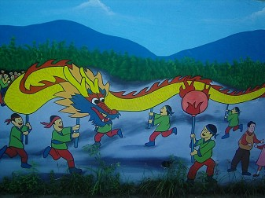
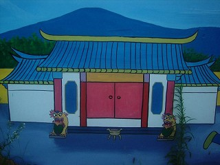
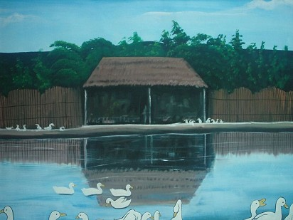
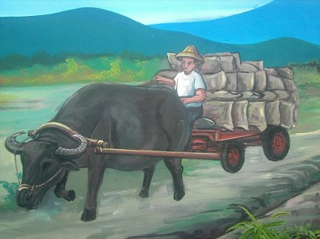
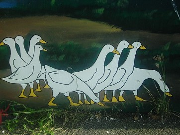
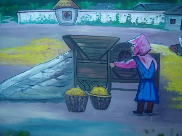
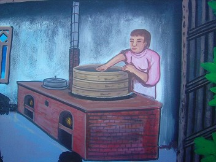
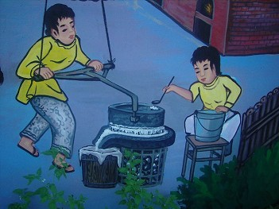

彩繪牆：村長有跟我們提過想要讓彩繪牆變成是我們下犁村的最大特色，但因經費不夠所以還未完成。
 
這是在村長家門外的彩繪牆，覺得這很厲害，所以就放上來跟大家分享，如果想要看到更多的話，可以到這裡四處走走或許可以看到更多不同的厲害成品喔～

這是更過去的畫面，我覺得畫得很逼真，不仔細看的話還會以為那裡真的有湖呢！ 
下犁，犁，表示下犁人都很勤勞不怕辛苦，在無意中發現''犁''其實代表牛在犁田，牛不都是很勤勞的嗎？
所以我想這個村會取為''下犁''就是這個意思吧！
這是在欣賞彩繪牆時所看到的，這位老爺爺在這麼熱的天氣哩，還勤奮地在田裡工作，證明了上面的話是對的，如果是我應該會受不了吧～
如果想要體驗農村生活，可以來下犁村逛逛，說不定會有意想不到的收穫喔～
 
 
最後，來幾張自己沒仔細看誤以為是真的的照片給大家欣賞。
以上的介紹只是一小部分而已，想要親眼看到的話，就趕快來下犁玩吧，我們希望你（妳）喜歡，讓彩繪牆成為下犁的特色。
看完這些敘述，心動嗎？
心動，不如馬上行動～
<--回下犁村首頁 |